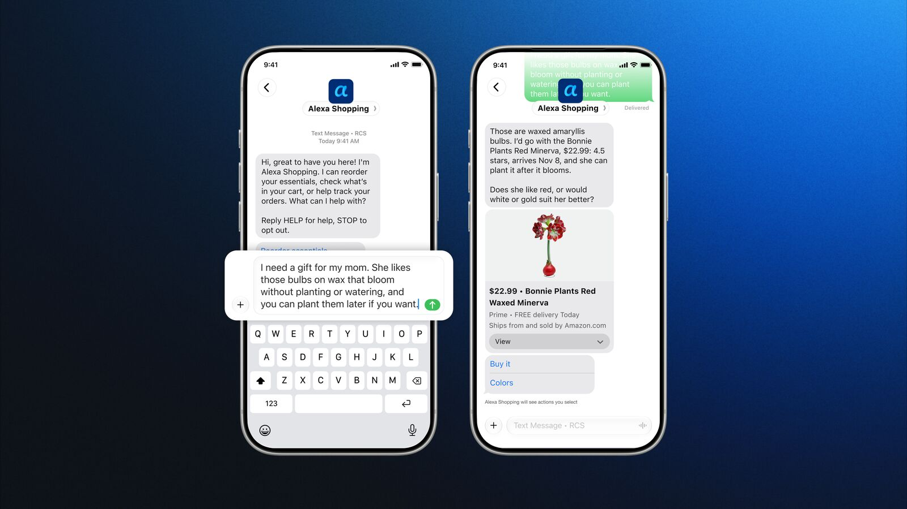
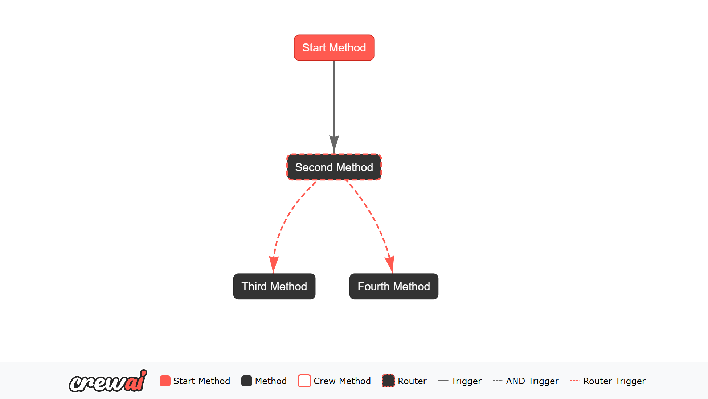
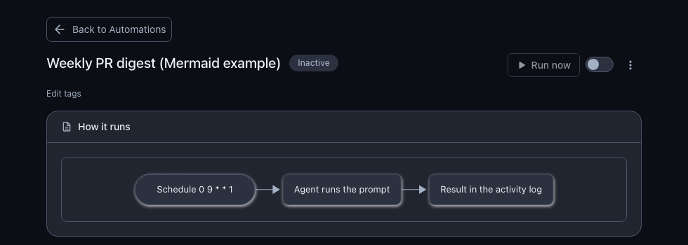
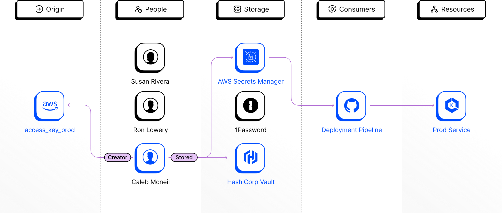

AI NEWS ISSUE 40
Amazon Alexa, 문자로 찾고 구매한다
Amazon은 문자메시지로 쇼핑을 맡기는 채널을 열었습니다. CrewAI의 대화 세션, OpenHands의 자동화 설명도, Clutch의 신원 관리와 함께 요청이 실제 작업으로 이어지는 과정을 살펴봅니다.
AT A GLANCE
30초 요약
- Amazon Alexa 미국 일부 초대 고객에게 문자 쇼핑을 제공합니다. 상품 탐색·비교·구매·배송 조회를 지원하고, 이용 대상을 몇 주에 걸쳐 확대할 계획입니다.
- CrewAI 1.15.36 여러 차례 대화를 이어가는 Agent 세션을 실험적으로 추가했습니다. 기본 대화 기록은 메모리에 남으며, 중단 후 복구에는 별도 저장 설정이 필요합니다.
- OpenHands v1.37.0 자동화가 어떻게 실행되는지 Mermaid 도식으로 보여줍니다. 대화 복원·표시 순서와 반복 조회도 수정했습니다.
- Clutch Security 에이전트를 만든 사람부터 사용하는 인증정보와 접근 대상까지 연결해 보여주는 제품입니다. 인수 논의 보도와 제품 기능을 나눠 살펴봅니다.
자료 확인 11월 5~6일자 보도·릴리스를 2026년 11월 7일 한국시간 기준으로 확인했습니다. 제품 소개와 개발자 시연은 제공자가 공개한 자료이며, 모임의 실험 제안은 별도로 표시했습니다.
01 / AMAZON ALEXA FOR SHOPPING
필요한 순간에 문자를 보내면,
상품을 찾고 구매까지 이어집니다
Amazon이 11월 6일 Alexa for Shopping에 문자메시지 채널을 추가했습니다. 미국의 일부 고객이 초대를 받아 약관에 동의하고 전화번호를 연결하면 이용할 수 있습니다. 앞으로 몇 주에 걸쳐 대상을 확대할 계획이며, 이번 발표의 제공 지역은 미국입니다. Amazon 발표 ↗


문자로 상품을 검색·비교하고 장바구니에 담거나 구매할 수 있습니다. 사진으로 비슷한 상품을 찾고, 가격 하락 알림을 받거나 배송 상태를 확인하는 요청도 지원합니다. Amazon이 든 재구매 예시는 “지난달 산 세제를 다시 주문해 줘”이며, 고객의 승인을 받아 구매하는 흐름입니다.
문자에서 고른 상품을 앱에서 다시 살펴봅니다
Amazon은 문자에서 시작한 요청을 앱·웹·Alexa 기기로 이어가는 기능도 순차 제공한다고 설명했습니다. 이동 중에 선물을 고르다가 집에서 앱으로 비교·결제하는 식입니다. 고객이 알려준 선호와 진행 중인 일을 다음 대화에 활용합니다.
대화로 부탁하는 일이 쉬워지면 상품을 다시 검색하고 같은 조건을 입력하는 수고를 줄일 수 있습니다. 다만 이 발표에서 실제 구매 완료 시간이나 반복 입력이 얼마나 줄었는지 측정한 결과는 제시하지 않았습니다.
Reuters는 이번 출시를 Amazon의 외부 쇼핑 에이전트 Muse 접근 차단과 함께 보도했습니다. 고객의 요청을 받는 채널을 넓히는 일과, 외부 에이전트에게 계정·거래 접근을 허용하는 일은 사업자가 따로 결정하는 문제입니다. Reuters 보도 ↗
02 / CREWAI 1.15.36
한 번의 답변 뒤에도
같은 Agent와 대화를 이어갑니다
CrewAI가 11월 6일 공개한 1.15.36에는 실험적 대화형 Agent 세션이 들어갔습니다. 단독 Agent에 conversational=True를 설정하고 handle_turn()으로 다음 요청을 전달하거나 chat()으로 대화할 수 있습니다. 릴리스 ↗ · 기능 구현과 조건 ↗
예를 들어 장애 로그를 분석한 뒤 “방금 추가된 로그도 보고 원인을 좁혀 줘”라고 이어서 요청할 수 있습니다. 개발자가 매번 이전 대화를 새 입력으로 조립하는 부담을 줄이는 방향입니다.
대화를 이어갈 때 지켜야 할 세 가지 조건
- 대화 하나에 Agent 하나
- 서로 독립적인 대화에는 별도 Agent를 사용합니다.
- 겹치는 요청은 거절
- 같은 Agent에 동시 턴을 보내면 오류를 반환합니다. 앱에서 순서를 관리해야 합니다.
- 복구하려면 저장 설정
- 기본 기록은 메모리에 있습니다. Flow 저장과 복원된 세션의 접근 검사를 별도로 구성합니다.
대화 세션은 내부적으로 Flow 실행 구조를 사용합니다. 아래 공식 도식은 Flow가 다음 작업을 선택하는 방식을 이해하기 위한 보조 자료입니다.


이번 버전은 실행 시 누락된 API 키를 요청하고 프로젝트 로딩 오류의 종류를 기록하는 기능도 추가했습니다. 동기 도구의 비동기 실행 경로와 GPT-6 Astra·GPT-6.1 Sol의 Responses API 도구 호출도 수정했습니다.
대화 기록을 보존하더라도 장바구니나 업무 시스템의 현재 상태까지 자동으로 일치하지는 않습니다. 개발할 때는 대화의 기억과 실제 작업 결과를 따로 대조할 지점이 필요합니다. 이 조건은 뒤의 채널 전환 실험으로 이어집니다.
03 / OPENHANDS v1.37.0
자동화 설정 옆에서
무엇이 실행되는지 봅니다
OpenHands v1.37.0은 자동화 설명에 Mermaid 다이어그램을 표시하는 기능을 추가했습니다. 자동화 자체 설명이나 템플릿 설명을 먼저 쓰고, 둘 다 없으면 트리거·이벤트 필터·실행할 프롬프트 또는 진입점을 바탕으로 흐름도를 만듭니다. 11월 6일 릴리스 ↗ · 구현 설명 ↗


새 담당자는 긴 프롬프트나 스크립트를 읽기 전에 “언제 시작하고 무엇을 남기는가”를 볼 수 있습니다. 위 화면도 설정된 절차를 설명하는 자료입니다. 실행 성공 여부는 활동 기록에서 확인해야 합니다.
함께 반영된 수정에는 UTC 대화 이력 뒤에 재개한 세션을 배치하는 처리, 기록 재생이 끝나기 전에 빈 채팅 안내가 나타나는 문제, 실시간 갱신 중 반복되는 이력 조회가 있습니다. 이를 새로운 장기 작업 복구 시스템의 출시로 넓혀 해석할 필요는 없습니다.
04 / CLUTCH SECURITY
에이전트의 이름만으로는
접근 권한을 알 수 없습니다
TechCrunch는 Palo Alto Networks의 Clutch 인수 논의를 보도했습니다. 보도 원문 ↗ 11월 7일 확인한 공식 자료에서는 거래 완료 발표를 찾지 못했습니다.
Clutch가 다루는 문제는 에이전트가 누구의 인증정보로 어디에 접근하는지입니다. 공식 제품 소개는 사람·에이전트·도구·인증 주체·접근 대상의 연결 관계를 보여줍니다. 서비스 계정과 API 키 같은 비인간 신원(NHI)을 관리하는 일을 에이전트의 실제 실행 경로까지 확장한 것입니다. Clutch 제품 설명 ↗
누가 맡겼고, 어떤 권한을 쓰는지 연결합니다
- 사람배포·관리 담당자
- 에이전트상품 조사 도우미
- 도구상품 조회 API
- 인증 주체조회용 서비스 계정
- 접근 대상상품·재고 데이터
예를 들어 상품을 조사하는 에이전트가 결제 변경 권한까지 가진 계정을 공유한다면, 도구 이름만 보아서는 그 범위를 놓칠 수 있습니다. 업무를 맡기는 사람과 실제 자격증명의 권한을 함께 추적해야, 불필요한 접근을 줄이고 문제가 생겼을 때 끊을 대상을 찾기 쉬워집니다.
Clutch는 이런 관계를 Identity Lineage로 연결하고 신원·에이전트·비밀정보를 관리한다고 설명합니다. 제품이 제시한 기능 범위이며, 이번 기사에서 고객 환경의 탐지 성능을 검증한 것은 아닙니다. 공식 플랫폼 소개 ↗


OUR VIEW
요청은 간단해져도,
실행한 일은 분명해야 합니다
Amazon은 고객이 쇼핑을 시작하는 경로를 넓혔습니다. CrewAI는 개발자가 이어지는 대화를 만들도록 돕고, OpenHands는 설정한 자동화를 읽기 쉽게 보여줍니다. Clutch는 그 실행에 쓰이는 신원과 권한을 다룹니다. 서로 다른 제품이지만, 일을 맡긴 뒤 무엇을 확인해야 하는지 생각하게 합니다.
우리의 관심은 같은 조건을 다시 설명하고, 진행 상황을 찾아보고, 결과를 대조하는 일이 얼마나 줄어드는가입니다. 문자에서 웹으로 옮겼을 때 최신 수량이 남아 있는지, 자동화가 실제로 끝났는지, 조회 요청에 불필요한 권한이 붙지 않았는지를 시스템이 확인할수록 사람이 뒤에서 정리할 일이 줄어듭니다.
대화 기록, 작업 상태, 실행 권한을 각각 확인할 수 있게 만드는 것이 이번 소식에서 가져갈 Workless Engineering 과제입니다.
OUR LAB / 아직 실행하지 않은 실험 제안
문자에서는 두 개, 웹에서는 한 개.
장바구니에는 무엇이 남을까요?
같은 가상 고객이 문자에서 “지난번 세제를 두 개 담아 줘”라고 말한 뒤, 웹 장바구니의 수량을 한 개로 고칩니다. 이때 먼저 시작한 두 개짜리 조회가 늦게 끝납니다. 최종 장바구니에는 한 개만 남고, 고객이 처음부터 다시 설명할 필요가 없어야 합니다.
Amazon의 채널 간 대화 연결과 CrewAI의 세션 조건에서 아이디어를 얻었습니다. 최근 호의 구매 승인 실험에 이어 이번에는 채널을 오가는 요청의 순서와 사용자별 상태 분리를 확인합니다. 실제 문자 발송·주문·결제 없이 두 개의 입력창과 모의 장바구니로 구현합니다.
늦게 끝난 작업이 최신 수량을 덮지 않게 합니다
- 1문자 요청을 접수합니다
작업
공유 상태 · v1 / 수량 2CART-A의 수량 2개를 버전v1로 저장합니다. 에이전트가 v1을 읽고 상품 조회를 시작합니다. - 2웹에서 수량을 바꿉니다
같은 고객·작업임을 확인한 뒤, 변경 요청을 저장해
공유 상태 · v1 → v2 / 수량 2 → 1v2 / 수량 1로 만듭니다. - 3예전 조회 결과가 도착합니다
도구 호출이 읽었던 v1과 현재 v2가 다릅니다. 모의 API는 이전 결과의 반영을 거절하고 최신 상태를 반환합니다.
공유 상태 · v2 / 수량 1 유지 - 4최신 조건으로 준비합니다
v2를 읽어 다시 준비하고, 버전 확인과 장바구니 반영을 한 번에 처리합니다. 두 화면에 같은 최종 결과를 보여줍니다.
기대 결과 · 장바구니 1개 / 조건 재입력 0회
요청 기록만 전달하는 방식과 현재 상태를 대조하는 방식을 비교합니다
A는 문자 요청과 웹의 변경 기록을 모델에 전달해 현재 수량을 판단합니다. B는 같은 모델·지침·상품 자료를 쓰되, 고객·작업별 공유 상태와 버전을 대조하는 연결 코드를 추가합니다. 웹의 수량 변경은 모델의 응답을 기다리지 않고 서비스에 저장합니다. 입력에는 요청 ID·채널·변경 내용을 담고, 사용자 식별은 모의 인증 계층에서 정합니다. 모델이 말한 고객 ID로 다른 대화를 열지 않게 합니다.
B의 실행 API는 예상 버전과 현재 버전을 대조한 뒤 반영하며, 같은 요청 ID는 한 번만 처리합니다. 한 Agent의 대화 턴은 순서대로 실행하고, 다른 고객은 별도 Agent와 저장 공간을 사용합니다. 이 연결 코드와 공유 상태는 실험에서 직접 구현할 부분이며, CrewAI의 기능만 켜면 생기는 구조로 가정하지 않습니다.
| 넣어 볼 상황 | 기대 결과 |
|---|---|
| 문자에서 웹으로 이동 | 상품·수량을 다시 입력하지 않고 같은 작업을 이어갑니다. |
| 이전 조회가 늦게 도착 | 수정된 수량을 유지하고 이전 버전의 반영은 거절합니다. |
| 같은 요청이 두 번 도착 | 변경을 한 번만 적용하고 같은 결과를 돌려줍니다. |
| 서로 다른 고객의 동시 요청 | 각 고객의 상품·수량·응답이 섞이지 않습니다. |
| 반영 후 응답만 유실 | 요청 ID로 결과를 확인합니다. 재전송으로 수량을 늘리지 않습니다. |
| 복원할 상태를 읽지 못함 | 완료를 추측하지 않고 재시도 대기를 표시합니다. |
먼저 별도의 조정용 6건으로 연결 코드와 지침을 맞춘 뒤 평가용 18건을 고정합니다. 두 방식에 같은 접수 순서·도구 지연·오류를 재생하고, 사람이 미리 정한 최종 상태와 비교합니다. 고정 모델 응답으로 버전·중복 검사를 먼저 확인하고, 실제 모델 평가에서는 모델과 지침 버전을 기록합니다.
18건 중 올바른 최종 상태에 도달한 건수, 다른 고객의 상태가 섞인 건수, 고객의 조건 재입력 횟수, 재시도·완료 시간을 남깁니다. 상태 혼선이나 중복 반영이 한 건이라도 있으면 도입을 보류합니다. 완료 건수가 같을 때 재입력과 시간을 비교하고, 입력 재생 파일·상태 변경 로그·검증기를 다음 버전에서도 쓸 결과물로 남깁니다.
SOURCES
읽은 자료
- Amazon · Alexa for Shopping 문자 채널 11월 6일 · 미국 초대 출시, 기능과 채널 연결
- Reuters · Amazon의 문자 쇼핑 출시 보도 11월 6일 · 외부 에이전트 접근 통제 배경
- CrewAI · 1.15.36 릴리스 · 대화형 Agent PR #9017 11월 6일 릴리스 · 실험 기능과 세션·저장 조건
- CrewAI · 공식 Flows 문서의 조건 분기 도식 11월 7일 확인 · 일반 Flow 구조를 설명하는 보조 자료
- OpenHands · v1.37.0 릴리스 · 자동화 설명도 PR #19318 11월 6일 릴리스 · 다이어그램과 대화 표시 수정
- TechCrunch · Clutch 관련 보도 11월 5일 22:28 PST, 한국시간 11월 6일 15:28
- Clutch · 에이전트와 접근 대상 연결 · 플랫폼 소개 11월 7일 확인 · 공급사의 제품 설명
- Clutch · Identity Lineage 공식 도식 11월 7일 확인 · 비인간 신원의 연결 관계를 설명하는 보조 자료
기능의 제공 범위와 실험 조건을 구분해 읽었습니다. 본문의 가상 장바구니 실험은 아직 실행하지 않았습니다.